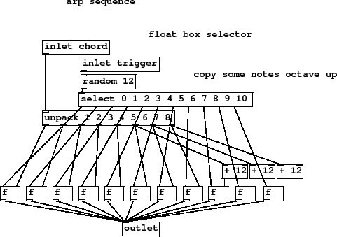
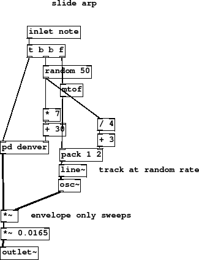

Subsections
Figure 33 summary
- sequencer and synth
- delay fx at 3 x period
This diagram should be looking familiar now. Again, effects delay
time is a function of period, 3 times the period, and there is
the usual arrangement of sequencer and synth with the mixer channel
set up for fader 5.
K1-arp.pd
Figure 34 summary
- float box selector
- copy some notes octave up
All the 8 chord notes are unpacked and available with equal
probability on each step, including extra copies
of the upper 3 notes transposed by an octave, thus with 11
in total there is also the possibility of a rest from
a random selector of 12.
Figure 34:
K2-arp-seq
|

|
K2-arp-seq.pd
Figure 35 summary
- track at random rate
- envelope only sweeps
This is portamento, where a note always travels
between its last value and the new one, as opposed to
glissando where the note rises or falls consistently
from some value to the target note.
Slide time and decay are related so that
quick slides have a short envelope and long slides have a matching
long envelope. This sound has an interesting effect when combined
with the sustained notes of the pad.
Figure 35:
K3-arp-synth
|

|
K3-arp-synth.pd
Figure 36 summary
- filter in feedback loop
- center then left only
Here is the delay at the heart of most our effects so far. In the feedback
circuit is a filter to limit recirculating signals to the midrange.
[clip] is added defensively to make sure that a feedback greater than
0.9 is never sent by accident.
Delays work using pairs of objects in Puredata, one is to send to
the buffer and the other to read from it. The second parameter of the
[delwrite] object allocates memory, in milliseconds (times the
current sample rate). The names of reads and writes must match and should
be uniqe to that pair of objects in most uses, although many reads from
the same write is okay for multi-tap reverbs. Time may be varied on
[delread] via the first inlet with a float message, but this
causes unpredictable clicks as you might expect.
Signals arriving at the inlet go first to left and right outlets, and
then the delayed signal appears on the left channel only. You can create
many variations on the basic stereo delay effect each with their own
unique uses and applications. A ping pong is a delay that exchanges left
and right in the feedback, a lcr distributes delays left, center, right, and
so on.
K4-delay.pd
Figure 37 summary
A term you might use to describe a random note from the set on almost every beat
is "bubbling". This part creates a continuously changing part in
a high register that should be mixed in quite quietly to add sparkle
to the arrangement.
K5-arp-play.pd
K5-arp-play.ogg
Andy Farnell
http://obiwannabe.co.uk/